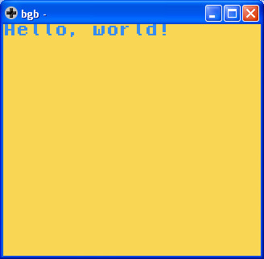
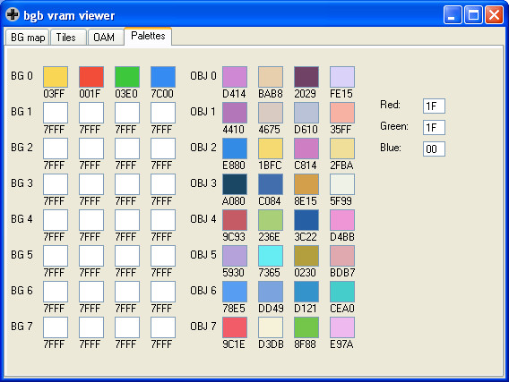

參考資訊：
https://bgb.bircd.org/
https://github.com/mrombout/gbdk_playground
http://gbdk.sourceforge.net/doc/html/book01.html
Palette(BG)設定
void set_bkg_palette(UINT8 first_palette, UINT8 nb_palettes, UINT16 *rgb_data) NONBANKED;
第一個參數是Palette目標位置(0~7)
第二個參數是需要複製多少個Palette(1~8)
第三個參數是Palette來源位置
main.c
#include <stdio.h>
#include <gb/gb.h>
#include <gb/cgb.h>
unsigned short palette[] = {RGB_YELLOW, RGB_RED, RGB_GREEN, RGB_BLUE};
void main(void)
{
set_bkg_palette(0, 1, palette);
printf("Hello, world!");
}
編譯
$ export PATH=$PATH:/opt/gbdk/bin $ lcc -o main.gb main.c $ printf '\x80' | dd of=main.gb bs=1 seek=323 count=1 conv=notrunc $ rgbfix -v -p0 main.gb
由於gbdk的makebin在x64環境無法正確執行，因此，司徒使用printf加上dd做0x143的修正，最後再使用rgbfix做checksum修正
執行bgb.exe，然後在bgb視窗上，按滑鼠右鍵，選擇Load ROM...，載入main.gb

